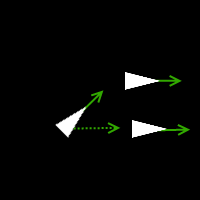
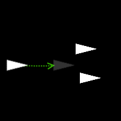
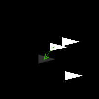

For a while I've been meaning to have a go at writing a flocking simulator. First used by Craig Reynolds in his Boids application, the generally accepted approach is a pretty good approximation of how birds move in flocks. It can also be used to model similar situations, such as herds of mammals and more.
Part of what makes it interesting to me is that it shows emergent behaviour. That is, a small number of simple rules produce behaviour that seems complex.
I had some spare time recently so I decided to write a 2D simulator in JavaScript. I'm by no means the first to do this, so to keep things interesting I decided to see if I could do it in a test-driven way.
My focus will be on my approach to testing. For more detail on how the simulation is implemented you can view the code on GitHub, or check out the various other articles available available.
Each creature in the flock (a "Boid") will follow three rules:
Try to match the direction of your neighbours
Try to move towards the centre of mass of your neighbours
Avoid getting too close to your neighbours
A boid's "neighbours" are any other boids within a certain distance away.
A single boid is represented by its own class:
Flocking.Boid = function (position, velocity) {
var self = this;
// Position of the boid (X, Y)
self.position = position || new Flocking.Vector();
// Direction and speed the boid is travelling in X and Y directions
self.velocity = velocity || new Flocking.Vector();
// ...
};
A Simulation then owns a collection of Boids, and updates each of them according to the rules.
Flocking.Simulation = function(boids, ...) {
// Update the simulation based on how much time has elapsed
// since the last update (this produces smooth animation).
self.update = function(msElapsed) {
// ...
};
};
Simulation's initial tests were designed to show that boids followed the rules.
describe("A boid that is within range to others", function () {
it("steers to match their average direction", function () {
// ...
});
it("moves towards centre of neighbours", function () {
// ...
});
describe("when it starts to become too close", function () {
it("moves away from them", function () {
// ...
});
});
});
Each test of the Simulation class creates a small number of boids, runs the simulation for a while, then checks that the boids end up where they should.
For example, this test checks a boid follows the Alignment rule:
it("steers to match their average direction", function () {
// Create 3 boids, all facing in different directions
var boids = [
new Flocking.Boid(new Flocking.Vector(40, 25), new Flocking.Vector(0.500, 0.500)),
new Flocking.Boid(new Flocking.Vector(40, 40), new Flocking.Vector(1.000, 0.000)),
new Flocking.Boid(new Flocking.Vector(40, 55), new Flocking.Vector(0.500, -0.500))
];
var simulation = new Flocking.Simulation(boids, parameters);
// Step through the simulation for two seconds (not real-time).
for (var time = 0; time < 2000; time += 15) {
simulation.update(15);
}
// The boids should by now all face the same direction
for (var index = 0; index < 3; ++index) {
var direction = boids[index].velocity.duplicate();
direction.normalise();
expect(direction.x).toBeCloseTo(1, tolerance);
expect(direction.y).toBeCloseTo(0, tolerance);
}
});
You could argue these tests are simplistic, because they use contrived situations with small numbers of boids. While there may well be room for regression-style tests that run a simulation with larger number of boids, I found my tests were still useful to drive development and verifying the boid's behaviour. Also their simplicity meant they were easier to write, understand and diagnose when they went red.
The lower-level functionality was also tested, such as the vector maths:
Flocking.Vector = function (x, y) {
var self = this;
self.x = x || 0;
self.y = y || 0;
self.add = function (other) {
self.x += other.x;
self.y += other.y;
};
self.subtract = function (other) {
self.x -= other.x;
self.y -= other.y;
};
// ...
};
describe("Vector", function () {
describe("when constructed", function () {
it("X and Y values match those given", function () {
var vector = new Flocking.Vector(1, 2.3);
expect(vector.x).toBe(1);
expect(vector.y).toBe(2.3);
});
it("X and Y default to 0 if unspecified", function () {
var vector = new Flocking.Vector();
expect(vector.x).toBe(0);
expect(vector.y).toBe(0);
});
});
describe("adding a vector", function() {
it("adds the X and Y values of another vector to the original vector", function () {
var v1 = new Flocking.Vector(1, 2);
var v2 = new Flocking.Vector(3, 4);
v1.add(v2);
expect(v1.x).toBe(4);
expect(v1.y).toBe(6);
});
});
describe("subtracting a vector", function () {
it("subtracts the X and Y values of another vector from the original vector", function () {
var v1 = new Flocking.Vector(1, 8);
var v2 = new Flocking.Vector(3, 4);
v1.subtract(v2);
expect(v1.x).toBe(-2);
expect(v1.y).toBe(4);
});
});
// ...
With a basic simulation working, I decided to add obstacles ("boulders" in the code, actually just red circles) for the boids to avoid.
This meant that in addition to the standard three rules, Simulation now also needed to make boids steer away from boulders that were within range.
describe("A boid that is within range to a boulder", function () {
it("avoids it", function () {
var boid = new Flocking.Boid(new Flocking.Vector(10, 150), new Flocking.Vector(0.100, 0.000));
var boulder = {
position: new Flocking.Vector(40, 150),
radius: 20
};
simulation = new Flocking.Simulation([boid], parameters, [boulder]);
for (var time = 0; time < 4000; time += 15) {
simulation.update(15);
var boidBoulderDistance = boid.position.getDistanceTo(boulder.position);
var isBoidWithinBoulder = boidBoulderDistance <= boulder.radius;
expect(isBoidWithinBoulder).toBe(false);
if (isBoidWithinBoulder)
return;
}
});
});
Whilst the above test passed, when running the simulation it turned out that boids could still end up inside boulders, if there were also a few other boids nearby it had to avoid.
To fix this I decided to write some basic collision detection. If a boid ended up inside a boulder, it would be moved out of it.
describe("A boid that has penetrated a boulder", function () {
it("is pushed out of it", function () {
var boid = new Flocking.Boid(new Flocking.Vector(35, 150), new Flocking.Vector(0.100, 0.000));
var boulder = {
position: new Flocking.Vector(50, 150),
radius: 20
};
simulation = new Flocking.Simulation([boid], parameters, [boulder]);
for (var time = 0; time < 1000; time += 15) {
simulation.update(15);
}
var boidBoulderDistance = boid.position.getDistanceTo(boulder.position);
var isBoidWithinBoulder = boidBoulderDistance <= boulder.radius;
expect(isBoidWithinBoulder).toBe(false);
});
});
This feels a bit hacky but it does the job and the effect looks fine, with boids seeming to collide with boulders then slide off them (the poor dears!).
Boids wrap around the edges of the screen by being teleported to the opposite side that they exit from. Ideally the code would take this into account when deciding what a boid's neighbours are. At the moment the simple wrap-around logic can break flocks apart when they go off screen.
Other behaviours could be added, such as boids being attracted to food, or fleeing predators.
The boids would look nicer if they were rendered as birds with flapping wings instead of triangles.